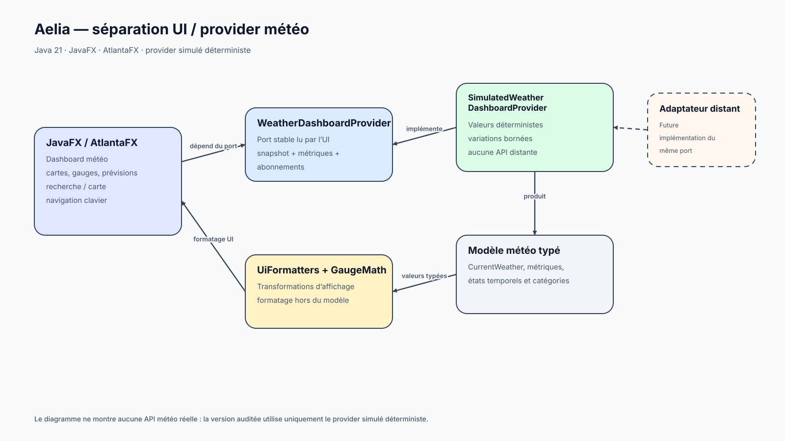
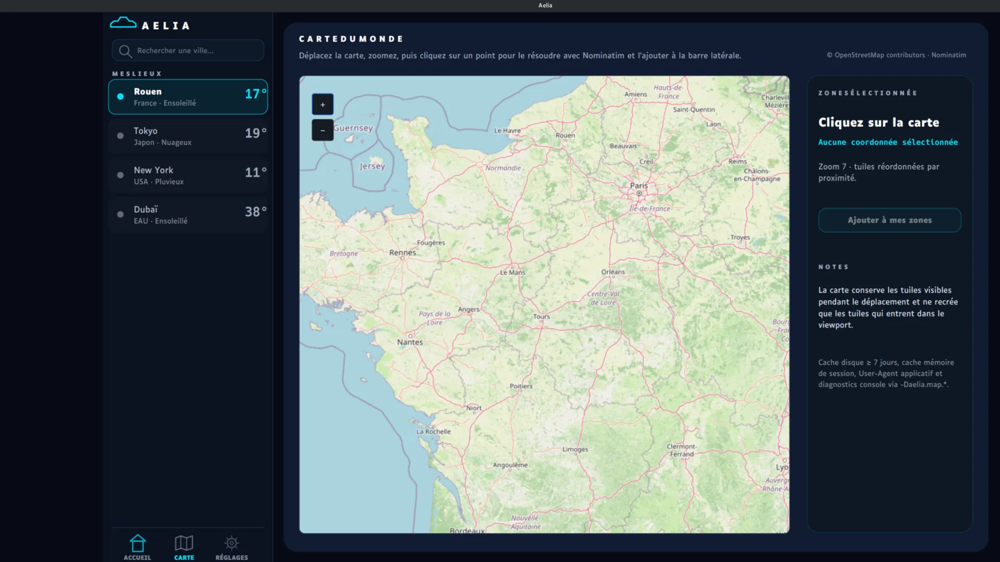

← Retour aux projets
Application météo desktop · Prototype
Aelia
Application météo JavaFX avec fournisseur simulé, données météo/air/UV/pollen, thème sombre, contraste renforcé et contrôles clavier.

Application météo desktop · Prototype
Application météo JavaFX avec fournisseur simulé, données météo/air/UV/pollen, thème sombre, contraste renforcé et contrôles clavier.
Problème
Préparer une application desktop extensible autour de fournisseurs météo, en conservant testabilité, accessibilité et séparation des ports/adaptateurs.
Architecture
Décisions
Schéma
Le schéma complète l’étude de cas avec les composants et frontières réellement présents dans le projet.

Implémentation
Difficultés
Qualité
Livraison
Résultats
Compromis
Limites
Suite
Captures
Des états complémentaires sélectionnés pour montrer l’interface et les parcours réellement implémentés.

Preuve de compétence